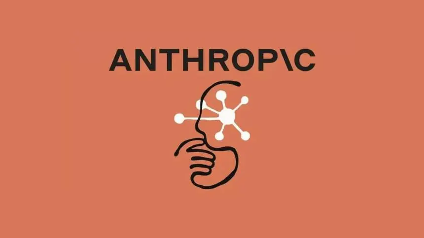

Anthropic IPO 定价 83 美元、估值 1.5 万亿美元：史上最大 IPO 今日登陆纳斯达克
四维 84 ×1.05 跨源独立报道≈ 88
Anthropic IPO 最终定价每股 83 美元，高于最初 70~78 美元区间，融资规模达 1073 亿美元、超越 SpaceX 成人类史上最大 IPO，完全摊薄估值约 1.5 万亿美元；灰市交易显示开盘涨幅或超 20%，代码「ANT」今日在纳斯达克挂牌，或催生数千名百万富翁。
💡 点评：昨晚还在看「获准上市」，今天价格就落在区间上限之上——市场对前沿模型的胃口完全没被英伟达管理层动荡浇灭。挂牌后的季度披露会第一次撕开前沿模型生意的真实毛利，这是比发行价更值得长期盯的数字。
IT之家 / 微信·AI 早报等多源